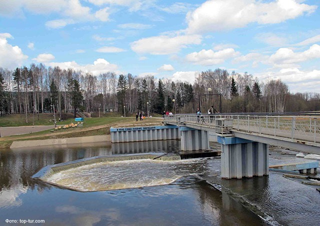
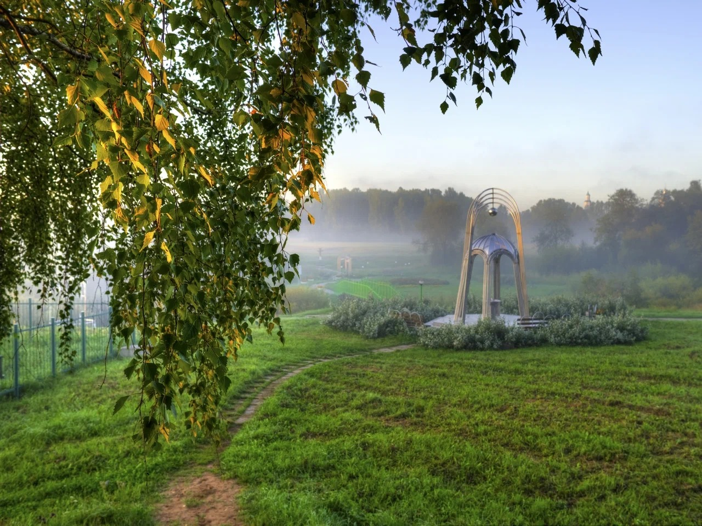

2021 · water
Hydro-unit on the Ivkina River repaired
Water-release structures were updated and the pond bed near the beach was cleaned.

Nizhne-Ivkino is located in the Kumyon District of the Kirov Region. The Ivkina River, springs and mixed forests create a place for observation and careful recreation.

Small changes that help preserve the natural environment.

Water-release structures were updated and the pond bed near the beach was cleaned.
A cleanup around the spring and nearby paths helps keep the routes clean.